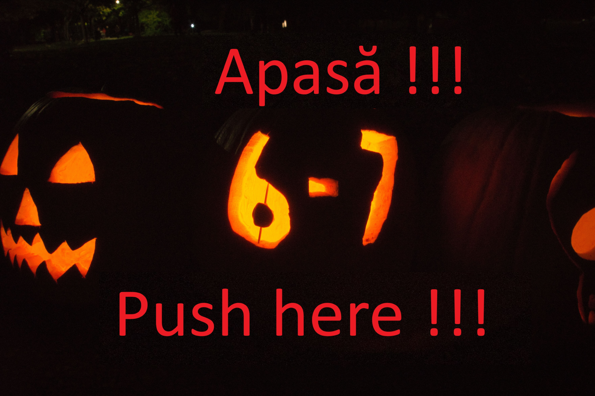

EDUCAȚIE SOCIALĂ • CLASELE 5–8
OSMAN
Enghin

Profesor de Educație Socială
CLASELE 5–8
Împreună pentru o generație care știe să gândească, să respecte și să construiască un viitor mai bun.
💡
🤝
🌍
RESPECT
RESPONSABILITATE
COMUNITATE
DREPTURI
👩🎓 👨🎓 👩🎓
Învățăm. Discutăm. Creștem.
Învățăm. Discutăm. Creștem.
DESPRE MINE
Un spațiu pentru învățare și dialog
Bine ai venit! Acesta este spațiul online dedicat activităților de Educație Socială pentru clasele 5–8. Aici vei găsi materiale, teste, resurse și informații care te ajută să înțelegi mai bine lumea din jur și rolul tău în comunitate.
RespectÎnvățăm să ascultăm și să apreciem diferențele.
Gândire criticăÎntrebăm, verificăm și argumentăm.
ResponsabilitateÎnțelegem că fiecare alegere are consecințe.
RESURSE
Materiale pentru elevi
📖
Lecții
Aici pot fi adăugate, pe parcurs, lecțiile și fișele de lucru pentru fiecare clasă.
🧠
Gândire critică
Exerciții și activități pentru analizarea informațiilor și argumentarea opiniilor.
🌐
Resurse externe
Putem adăuga ulterior linkuri către materiale educaționale utile.
„Educația socială nu se învață doar din cărți,
ci și din oameni, din exemple și din viața de zi cu zi.”
ci și din oameni, din exemple și din viața de zi cu zi.”
CONTACT
Hai să păstrăm legătura
enghin.36508@gmail.com este adresa mea de mail. Daca ai nelămuriri poți să îmi scrii!
✉️
Profesor Osman EnghinEducație Socială • Clasele 5–8